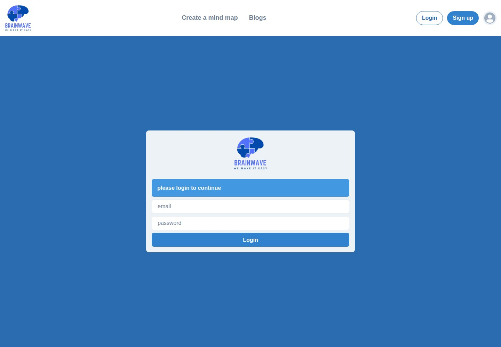
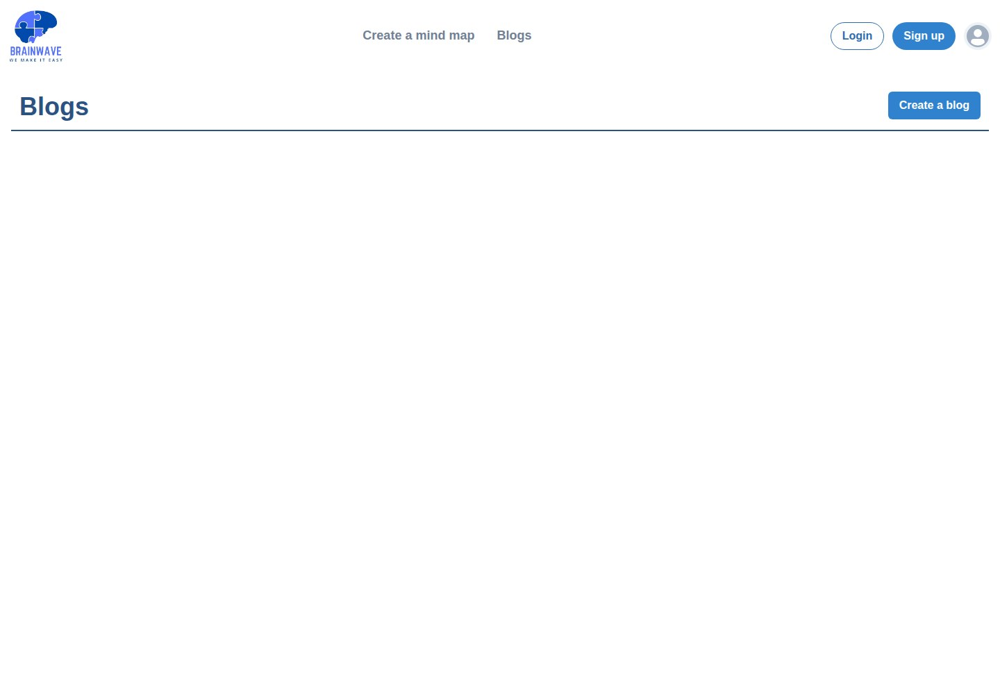
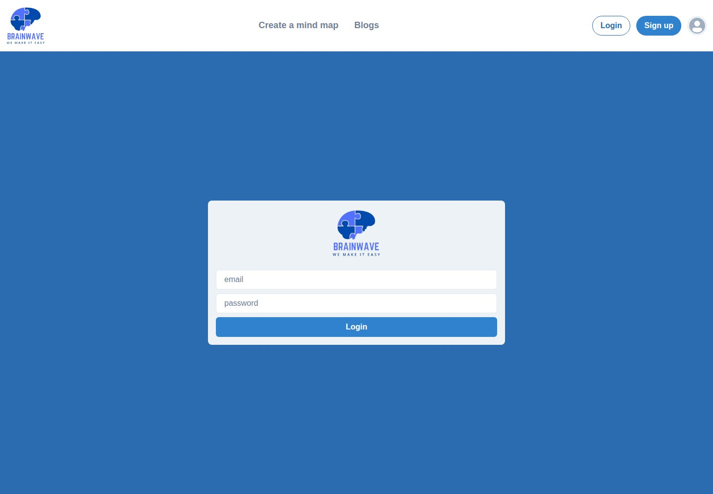
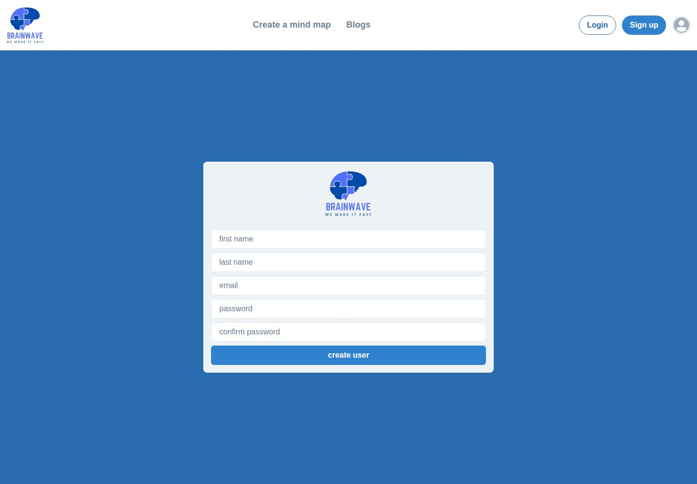
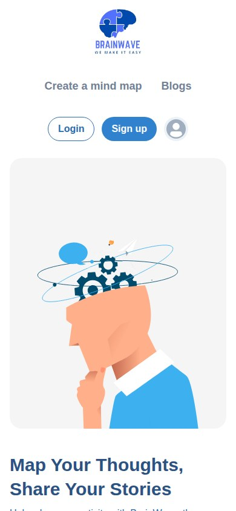
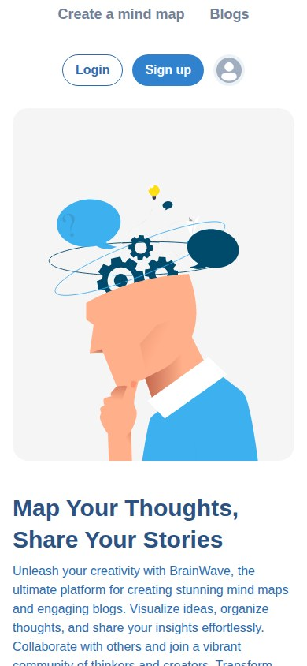
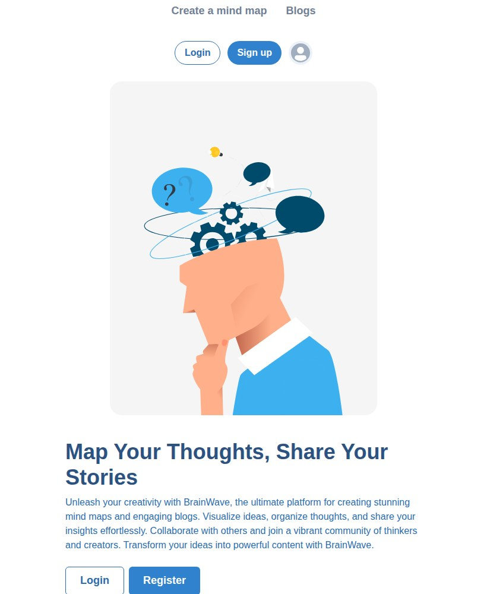
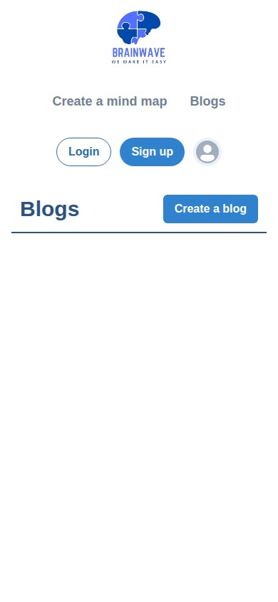
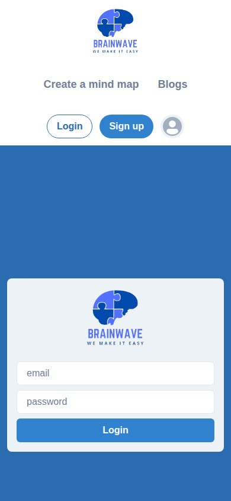
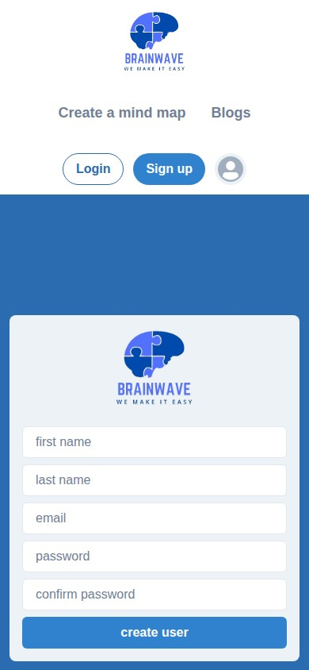

BrainWave
Map ideas. Share stories.

WHAT IT IS
Mind-map creation and blog publishing/sharing platform (as presented on the site).
The homepage markets BrainWave as a platform to create mind maps, organize and visualize ideas, and write/share blogs. Public pages show navigation and account forms, but creation routes redirect to login, so the creation and collaboration capabilities are not demonstrable without authentication.
This case study documents what the linked website presents. Individual contribution to this project has not been confirmed.
WHAT THE WEBSITE OFFERS
- Homepage hero presents BrainWave as a platform for mind maps and blogs; supporting copy mentions visualizing ideas, organizing thoughts, and sharing insights.
- Header includes a ‘Create a mind map’ link; opening /mind-map/create redirected to the login page rather than displaying an editor.
- A public Blogs page is available at /blogs, with a ‘Create a blog’ link; the page’s main listing area appeared blank with no visible blog entries.
- The ‘Create a blog’ route redirected to the login page.
- Login page visibly provides email and password fields and a Login button, plus the notice ‘please login to continue’ on protected-route redirects.
- Registration page visibly provides first name, last name, email, password, and confirm password fields with a ‘create user’ button; no information was submitted.
- The header shows a user/profile icon linking to /user; visiting that route redirected to login.
- Homepage includes an illustration and two calls to action, Login and Register.
VISITOR JOURNEY
Homepage → ‘Create a mind map’ → /mind-map/create redirects to /login; no mind-map editor was reached.
AUTHENTIC SCREEN CAPTURES · 11
Inside the experience.
Genuine, distinct screen captures supplied for this project. No screenshots have been fabricated or duplicated.









